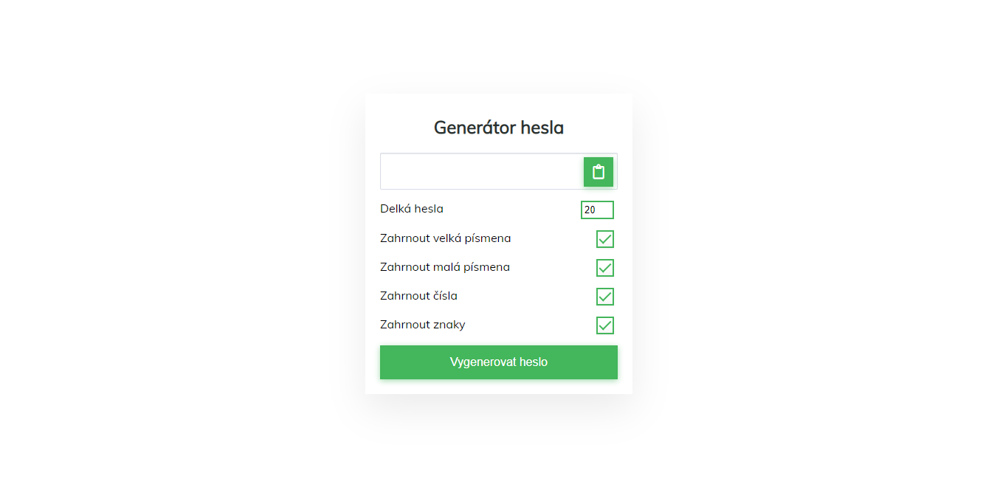
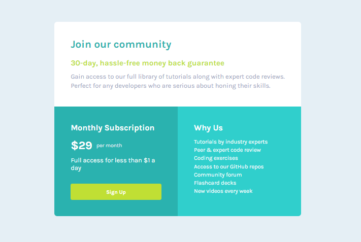
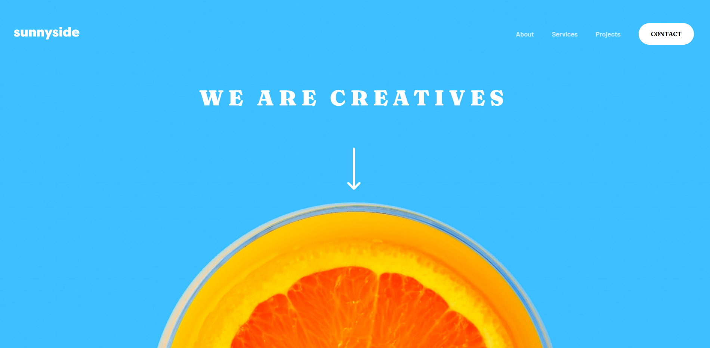
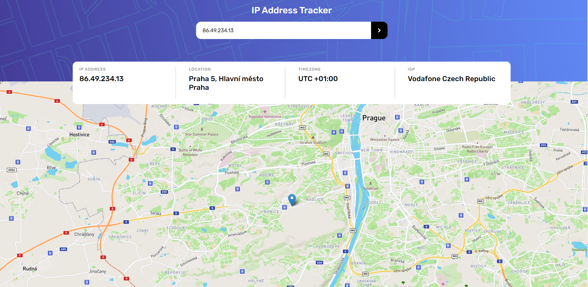
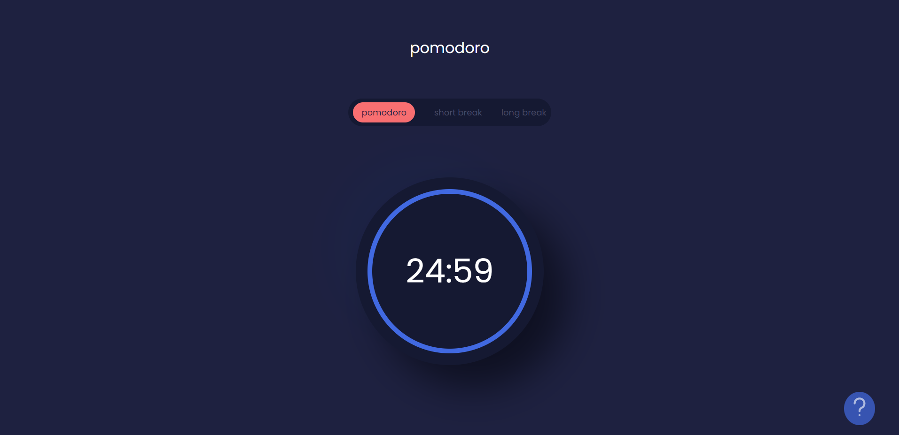
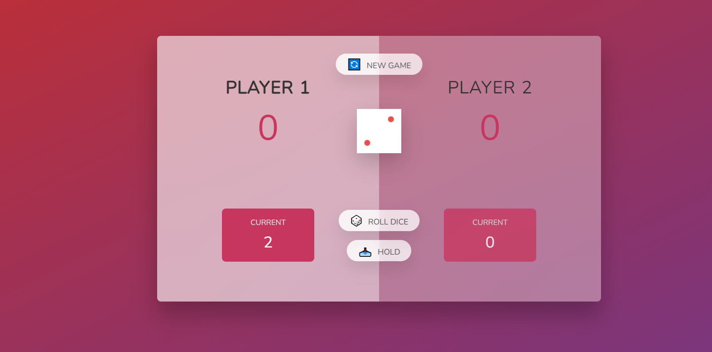
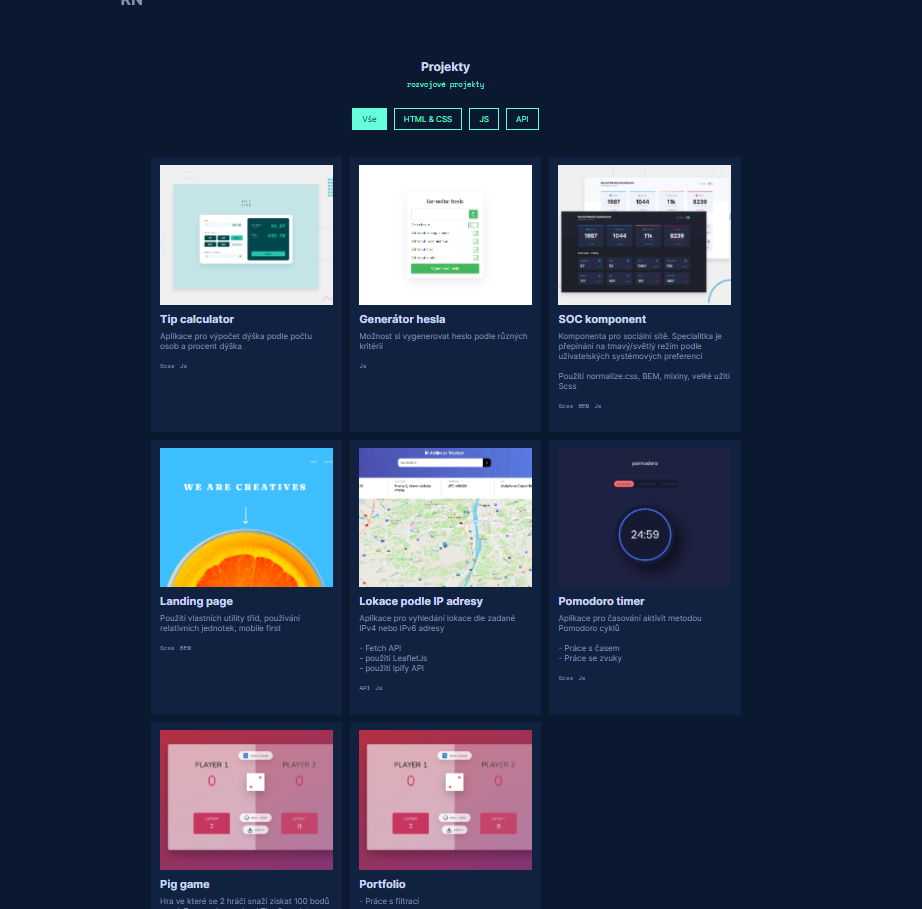

RN.
ResumeNějaké me projekty
Projekty
rozvojové projekty-

Tip calculator
Aplikace pro výpočet dýška podle počtu osob a procent dýška
- Scss
- Js
-

Generátor hesla
Možnost si vygenerovat heslo podle různých kritérií
- používání array funkce filter
- používání objektů
- Js
-

SOC komponent
Komponenta pro sociální sítě. Specialitka je přepínání na tmavý/světlý režím podle uživatelských systémových preferencí
Použití normalize.css, BEM, mixiny, velké užití Scss
- Scss
- BEM
- Js
-

User grid komponent
- Pro účel procvičení CSS Grid a grid template areas
- CSS
- CSS Grid
-

Landing page
Použití vlastních utility tříd, používání relativních jednotek, mobile first
- Scss
- BEM
-

Lokace podle IP adresy
Aplikace pro vyhledání lokace dle zadané IPv4 nebo IPv6 adresy
- Fetch API
- použití LeafletJs
- použití Ipify API
- API
- Js
-

Pomodoro timer
Aplikace pro časování aktivit metodou Pomodoro cyklů
- Práce s časem
- Práce se zvuky
- Scss
- Js
-

Pig game
Hra ve které se 2 hráči snaží získat 100 bodů první. Zpracováno v rámci The Complete JavaScript Course 2022
- Js
-

Portfolio
- Práce s filtrací
- Chytřejší způsob jak dodržet layout
- Js
- CSS